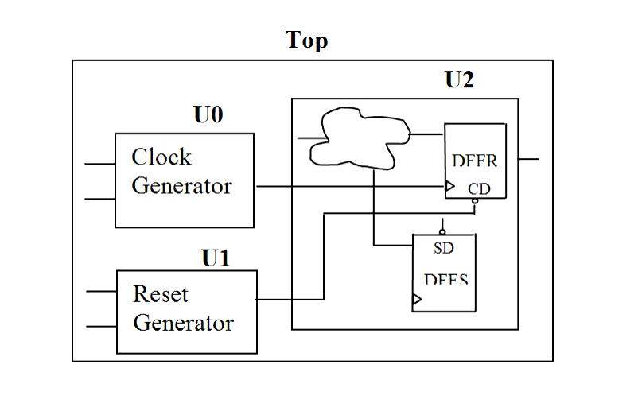

| Description | This rule fires when Leda detects resets and clocks that are not generated in the top-level module of the design. Placing clock and reset generators in the top-level module of the design allows you to observe and control the clock and reset signals. |
| Policy | DESIGN |
| Ruleset | PARTITIONING |
| Language | VHDL/Verilog |
| Type | Hardware |
| Severity | Error |
This is an example of valid Verilog code, followed by a circuit diagram that illustrates the correct approach:
module ntl_par18_top; ... wire Clk_gen; //generated clock wire Reset_gen; //generated reset ... Clk_gen U0 (Clock, Reset, Clk_gen); // Clock generator in a dedicated module Rst_gen U1 (Reset, Ctrl, Reset_gen); // Reset generator in a dedicated module Design_core U2(Clk_gen, Reset_gen, Din, Dout); endmodule